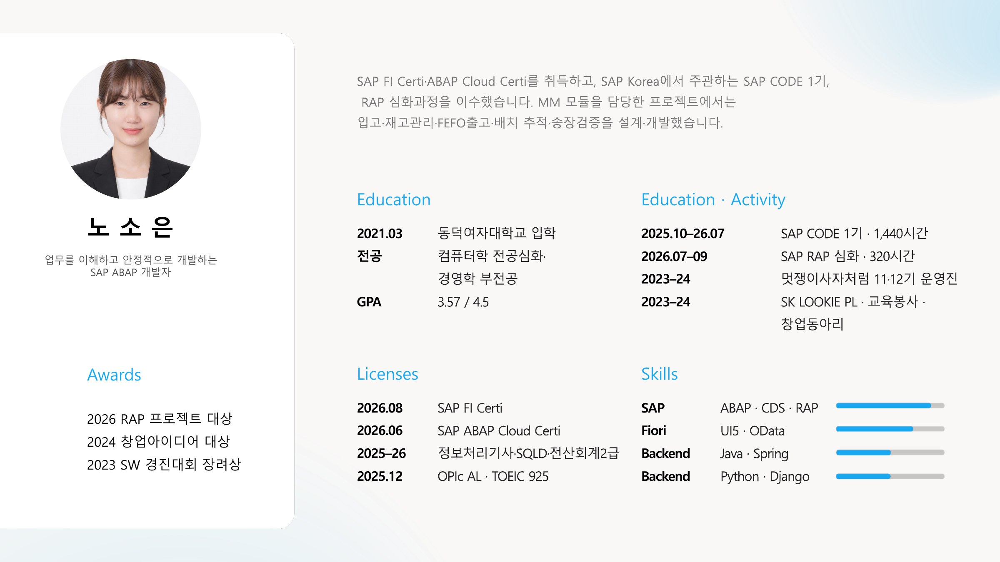
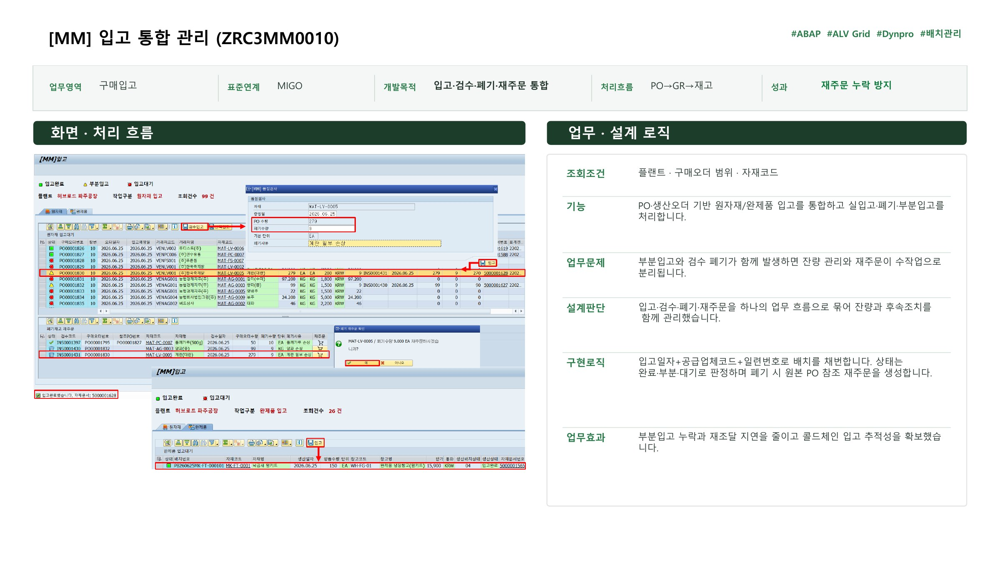
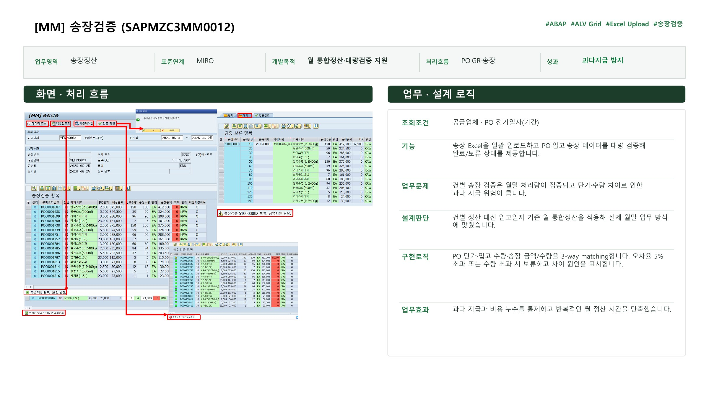
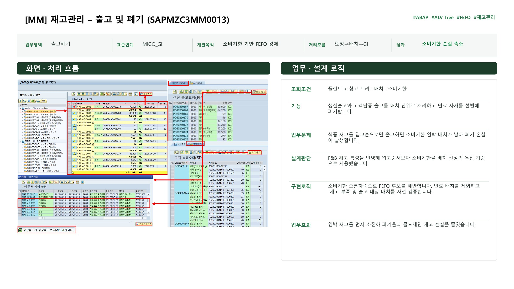
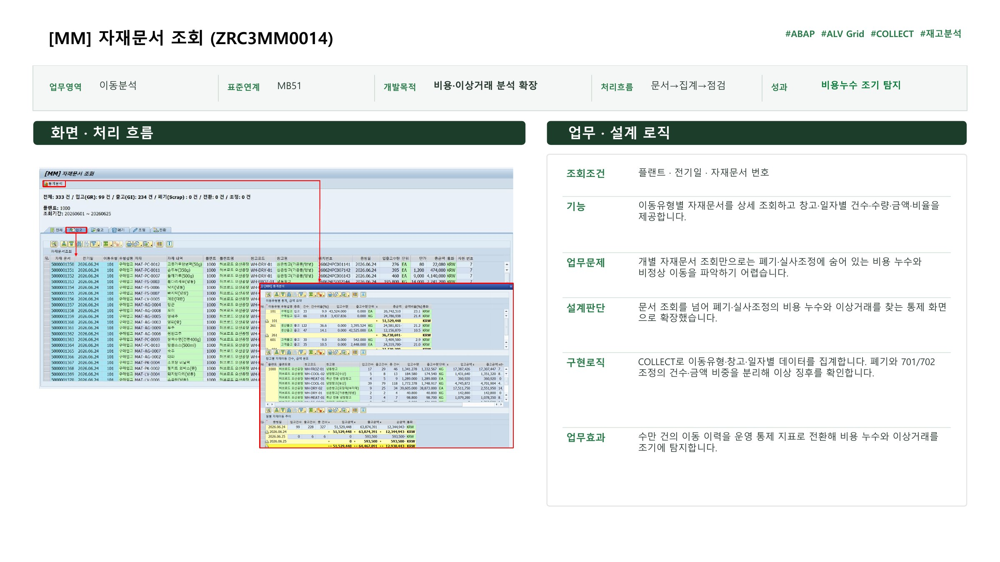
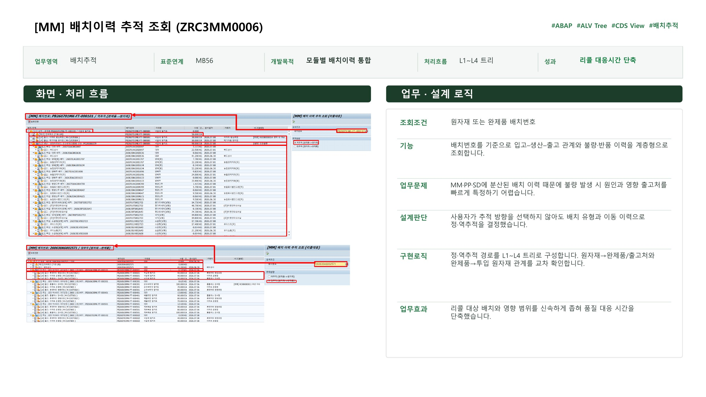
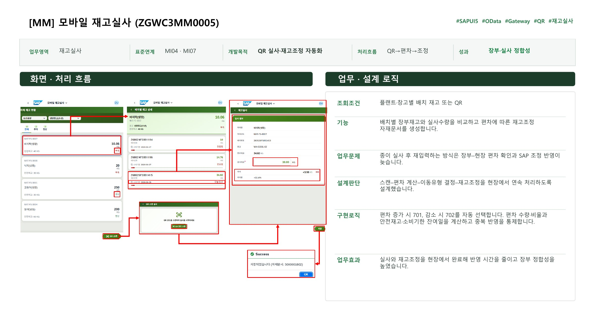
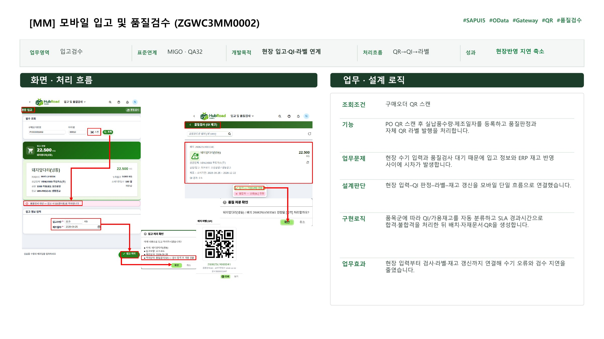
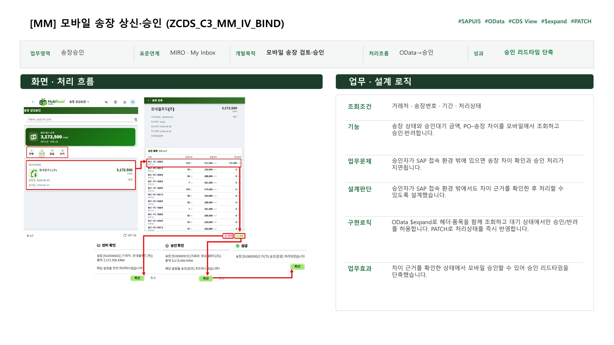

End-to-End 업무 이해
PO, GR, 재고, 송장과 회계 흐름을 연결해 앞뒤 업무가 끊기지 않도록 설계합니다.
SAP ERP · ABAP · FIORI
구매부터 입고, 재고, 송장까지 이어지는 업무 흐름을 분석하고 현업의 예외와 후속 처리까지 시스템으로 구현합니다.
01
WORKING PRINCIPLE
정상 처리만 구현하는 데 그치지 않고, 부분입고·검수 폐기·재고 편차처럼 현장에서 발생하는 예외가 다음 업무에 미치는 영향까지 설계합니다.
CORE STRENGTHS
MM 업무를 중심으로 데이터 정합성과 운영 안정성을 높이는 개발을 수행했습니다.
PO, GR, 재고, 송장과 회계 흐름을 연결해 앞뒤 업무가 끊기지 않도록 설계합니다.
부분입고, 중복 반영, 과다 지급과 같은 운영 위험을 검증 조건과 상태 관리로 통제합니다.
ABAP뿐 아니라 UI5, OData, QR을 활용해 현장에서 바로 처리할 수 있는 흐름을 만듭니다.
SELECTED WORK
업무 문제, 설계 판단, 구현 로직과 결과가 포트폴리오에 상세히 정리되어 있습니다.
01
MM · MIGO · ABAP
입고·검수·폐기·재주문을 하나의 흐름으로 연결해 부분입고 누락과 재조달 지연을 줄였습니다.
02
MM · MB56 · CDS VIEW
MM·PP·SD에 흩어진 이력을 정·역추적 구조로 통합해 불량 원인과 영향 범위를 좁혔습니다.
03
UI5 · ODATA · QR
QR 스캔부터 편차 계산과 701·702 재고조정까지 현장에서 연속 처리하도록 구현했습니다.
FULL PORTFOLIO








